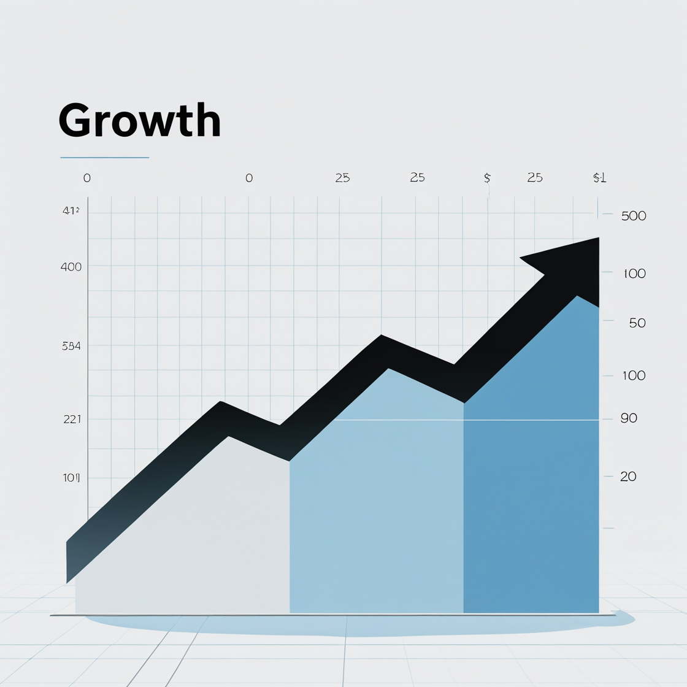

Financial Tactics for 14–22 Year‑Olds
Why You Should Care
If you’ve never saved or invested before, you’re not alone—but starting early gives you a massive edge.
https://pixels.com/featured/piggy-bank-and-coins-ktsdesign.html?srsltid=AfmBOoq-v90UBbhKupy4eDXVT25_8hqtrUv2AoqkcCKGK3j10Brg2TSb
What Is Investment?
Investment means using your money to buy something that can grow in value or generate income over time. Common vehicles are stocks (buying shares of companies), bonds (loans to businesses or governments), and real estate.
How & Where to Earn Money
- Part‑time jobs: Tutoring, retail, delivery, or on‑campus gigs.
- Freelancing: Write, design, code, or translate on platforms like Upwork or Fiverr.
- Side hustles: Sell handmade crafts, print‑on‑demand merch, or flip items online.
What Is Tax?
A tax is a compulsory fee collected by the government on your income or purchases. As you earn more, you’ll pay higher rates—so understanding tax rules helps you keep more of your money.
Online Money‑Making Methods
The internet offers low‑cost ways to start earning:
- Content creation: YouTube, TikTok, or blogging can generate ad revenue or sponsorships.
- Affiliate marketing: Promote products and earn a commission on sales.
- Print‑on‑demand: Design shirts, mugs, or posters—platform handles production.
- Online courses: Teach a skill you know and sell it on Udemy or Teachable.

Action Steps to Level Up
- Open a savings account and set aside at least 10% of any money you earn.
- Spend 1 hour researching beginner investing (e.g., index funds).
- Try a micro‑investing app (some let you start with $1).
- Track your expenses—use Covel to build a “money habit.”
- Learn tax basics in your country so you don’t get hit by surprises.